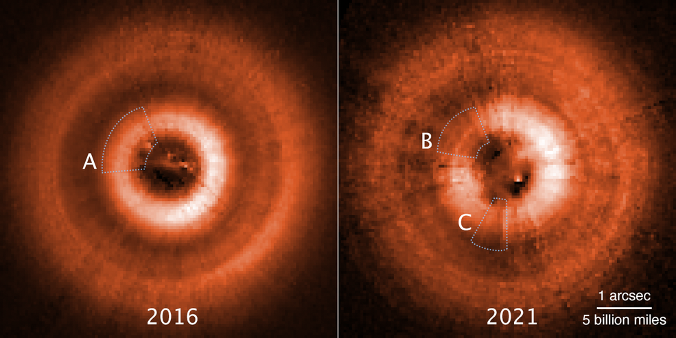

Hubble Follows Shadow Play Around Planet-Forming Disk
젊은 별 TW Hydrae는 NASA의 허블 우주 망원경 으로 그것을 관찰하는 과학자들과 함께 "그림자 인형극"을 하고 있습니다 .
2017 년 천문학자들은 적색 왜성을 둘러싸고 있는 거대한 팬케이크 모양의 가스와 먼지 원반의 표면을 가로지르는 그림자를 발견했다고 보고했습니다. 그림자는 행성에서 오는 것이 아니라 훨씬 더 큰 외부 디스크에 비해 약간 기울어진 내부 디스크에서 그림자를 드리우게 합니다. 한 가지 설명은 보이지 않는 행성의 중력이 행성의 기울어진 궤도로 먼지와 가스를 끌어당기고 있다는 것입니다.
이제 허블의 MAST 아카이브 에 저장된 관찰 사이에 불과 몇 년 만에 까꿍놀이를 하는 두 번째 그림자가 나타났습니다 . 이것은 시스템 내부에 중첩된 또 다른 디스크에서 온 것일 수 있습니다. 두 개의 원반은 건설 중인 한 쌍의 행성에 대한 증거일 가능성이 높습니다.

TW Hydrae는 천만년 미만이며 약 200광년 떨어져 있습니다. 초기에 우리 태양계는 약 46억년 전의 TW Hydrae 시스템과 비슷했을 것입니다. TW Hydrae 시스템은 지구에서 우리의 시야와 거의 정면으로 기울어져 있기 때문에 행성 건설 야드의 정중앙을 볼 수 있는 최적의 목표입니다.
두 번째 그림자는 2021년 6월 6일에 얻은 관측에서 발견되었으며, 이는 별 주위 원반의 그림자를 추적하도록 설계된 다년간 프로그램의 일환입니다. 메릴랜드 주 볼티모어에 있는 우주 망원경 과학 연구소의 유럽 우주국 AURA/STScI의 John Debes는 TW Hydrae 디스크를 몇 년 전에 이루어진 허블 관측과 비교했습니다.
The Astrophysical Journal 에 발표된 연구의 수석 연구원이자 수석 저자인 Debes는 "우리는 그림자가 완전히 다른 일을 했다는 것을 발견했습니다."라고 말했습니다 . "처음 데이터를 보았을 때 내가 기대했던 것과 다르기 때문에 관찰에 문제가 있다고 생각했습니다. 처음에는 당황했고 모든 협력자들은 다음과 같았습니다. 머리를 긁적이며 실제로 설명을 알아내는 데 시간이 걸렸습니다."
팀이 제시한 최상의 솔루션은 그림자를 드리우는 두 개의 잘못 정렬된 디스크가 있다는 것입니다. 그들은 이전 관찰에서 서로 너무 가까워서 놓쳤습니다. 시간이 지남에 따라 그들은 이제 분리되어 두 개의 그림자로 나뉩니다. "우리는 원시행성 원반에서 이것을 실제로 본 적이 없습니다. 그것은 우리가 원래 생각했던 것보다 시스템을 훨씬 더 복잡하게 만듭니다."라고 그는 말했습니다.
가장 간단한 설명은 잘못 정렬된 원반이 약간 다른 궤도 평면에 있는 두 행성의 중력에 의해 발생했을 가능성이 있다는 것입니다. Hubble은 시스템 아키텍처의 전체론적 관점을 결합하고 있습니다.

몇 년 간격으로 촬영한 허블 우주 망원경의 비교 이미지는 젊은 별 TW Hydrae를 둘러싸고 있는 가스와 먼지 원반을 가로질러 시계 반대 방향으로 움직이는 두 개의 섬뜩한 그림자를 발견했습니다. 디스크는 지구를 향하도록 기울어져 있어 천문학자들에게 별 주변에서 일어나는 일에 대한 조감도를 제공합니다. 2016년에 찍은 왼쪽 이미지는 11시 방향에 그림자[A] 하나만 보인다. 이 그림자는 외부 디스크에 약간 기울어져 별빛을 차단하는 내부 디스크에 의해 드리워집니다. 왼쪽 그림은 2021년에 촬영된 것과 같이 7시 위치에서 또 다른 중첩된 원반[C]에서 나온 두 번째 그림자를 보여줍니다. 이 나중 보기에서 원래 내부 원반은 [B]로 표시되어 있습니다. 그림자는 시계 바늘처럼 다른 속도로 별 주위를 회전합니다. 그들은 먼지를 궤도로 끌어들인 두 개의 보이지 않는 행성에 대한 증거입니다. 이로 인해 서로 약간 기울어집니다. 이것은 우주 망원경 이미징 분광기로 찍은 가시광선 사진입니다. 세부 사항을 향상시키기 위해 인공 색상이 추가되었습니다.
디스크는 별 주위를 돌면서 서로 랩핑하는 행성의 프록시일 수 있습니다. 그것은 약간 다른 속도로 두 개의 비닐 축음기 레코드를 회전시키는 것과 같습니다. 때때로 레이블이 일치하지만 하나가 다른 하나보다 앞서게 됩니다.
"그것은 두 행성이 서로 상당히 가까워야 함을 암시합니다. 만약 하나가 다른 것보다 훨씬 더 빨리 움직인다면, 이것은 이전 관측에서 발견되었을 것입니다. 이것은 서로 가까운 두 개의 경주용 자동차와 같지만, 하나는 천천히 다른 사람을 추월하고 랩핑합니다." Debes가 말했습니다.
의심되는 행성은 우리 태양에서 목성까지의 대략적인 거리에 위치한 지역에 있습니다. 그리고 그림자는 약 15년마다 별 주위를 한 바퀴 도는데, 이는 별에서 그 정도 거리에 있을 것으로 예상되는 궤도 주기입니다.
또한 이 두 개의 내부 디스크는 외부 디스크의 평면에 대해 약 5~7도 기울어져 있습니다. 이것은 우리 태양계 내부의 궤도 경사 범위와 비슷합니다. "이것은 전형적인 태양계 스타일 아키텍처와 일치합니다."라고 Debes는 말했습니다.
그림자가 떨어지는 외부 디스크는 우리 태양계의 카이퍼 벨트 반경의 몇 배까지 확장될 수 있습니다. 이 더 큰 원반에는 명왕성과 태양 사이의 평균 거리의 두 배에 이상한 간격이 있습니다. 이것은 시스템의 세 번째 행성에 대한 증거일 수 있습니다.
내부 행성은 별의 눈부심에 빛이 손실되기 때문에 감지하기 어려울 것입니다. 또한 시스템의 먼지는 반사광을 흐리게 합니다. ESA의 가이아 우주 관측소는 목성 질량의 행성이 별을 잡아당기는 경우 별의 흔들림을 측정할 수 있지만 긴 궤도 주기를 고려할 때 몇 년이 걸릴 것입니다.
허블 우주 망원경은 NASA와 ESA 간의 국제 협력 프로젝트입니다. 메릴랜드 주 그린벨트에 있는 NASA의 고다드 우주 비행 센터에서 망원경을 관리합니다. 볼티모어의 우주 망원경 과학 연구소(STScI)는 허블 과학 작업을 수행합니다. STScI는 워싱턴 DC에 있는 천문학 연구를 위한 대학 협회에서 NASA를 위해 운영합니다.